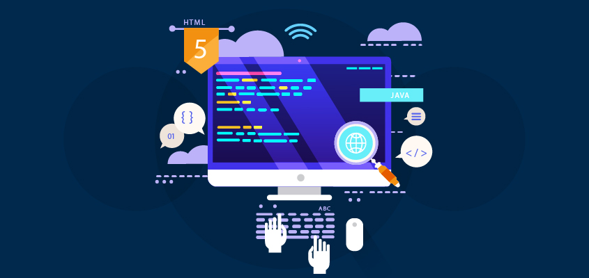

Teknoloji
Yapay Zeka ve Gelecek
Yapay zeka teknolojilerinin günlük hayatımıza etkileri ve gelecekte bizi bekleyen değişimler hakkında detaylı bir analiz.
Devamını Oku
Yapay zeka teknolojilerinin günlük hayatımıza etkileri ve gelecekte bizi bekleyen değişimler hakkında detaylı bir analiz.
Devamını Oku
Günümüz web geliştirme dünyasında kullanılan modern teknikler ve en iyi uygulamalar hakkında kapsamlı bir rehber.
Devamını OkuBu yılın öne çıkan kullanıcı arayüzü ve deneyimi tasarım trendlerini ve başarılı uygulama örneklerini inceliyoruz.
Devamını Oku